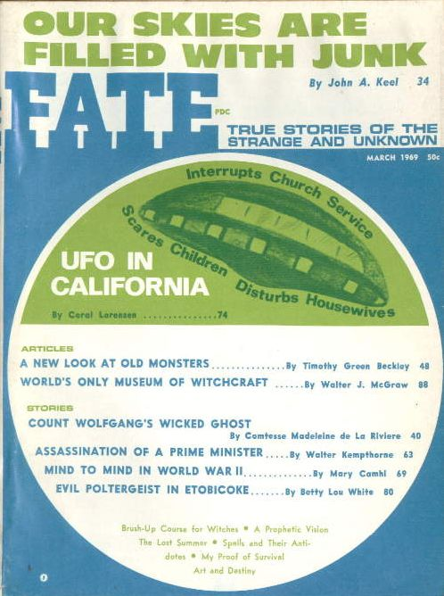

<!--#include virtual="/header.html" -->
<ul>
  <li>
    <figure class="right side">
      <figcaption>Couverture de <em>Fate</em> ce mois-là</figcaption>
      
    </figure>
    <a href="/science/crypto/ufo/enquete/dossier/Sverdlovsk/index.html">Prétendue récupération d'un ovni écrasé dans la
      région de Sverdlovsk en octobre 1968</a>.
  </li>
  <li><time>02</time> 1er vol du Concorde.</li>
  <li><time>03</time> Lancement d'<a href="/org/us/nasa/projet/apollo/09">Apollo 9</a> en orbite terrestre.</li>
  <li><time>13</time> Amerissage d'<a href="/org/us/nasa/projet/apollo/09">Apollo 9</a>.</li>
  <li><time>26</time><em>Meteor 1</em>, 1er satellite méteo soviétique.</li>
</ul>
<!--#include virtual="/footer.html" -->
